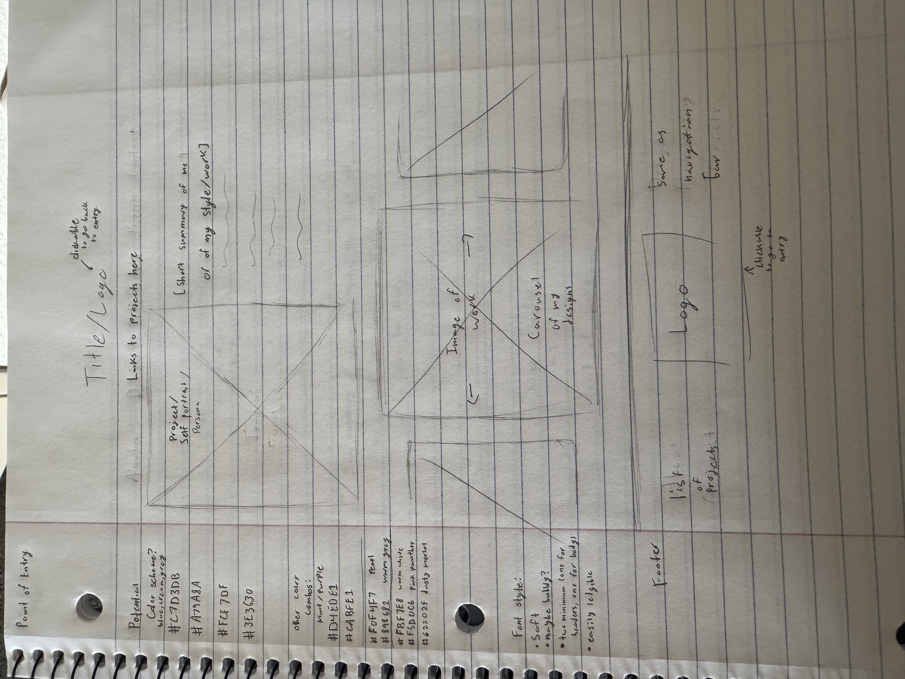

For my point of entry, as of now, it's pretty bleak since I haven’t added my other pages yet; I only have my rough sketch. I decided to keep my overall design generally straightforward, with the future links to other pages all being at the top and potentially at the footer if my page becomes long enough to warrant that. Even so, I’m a bit hesitant about making this whole thing my point of entry; as of now, I don’t have a concrete plan or know what images would even go in my placeholders, let alone whether the carousel idea would work or if I have enough photos to place in it. For now, I haven’t added any hyperlinks since I’m a bit unsure if I was supposed to in this assignment or the following assignment, but either way I’ll be handling that soon enough. I think my overall sketch is pretty ambitious for me, given I still don’t know much about coding, and I’ll definitely change things, especially with my color palettes. I’m still unsure which theme to follow and may change that later as well. For what feels temporary, all of it, even if I keep certain concepts I have in mind, I’m 100% sure that my original idea will not be exactly what the final project may come to be.